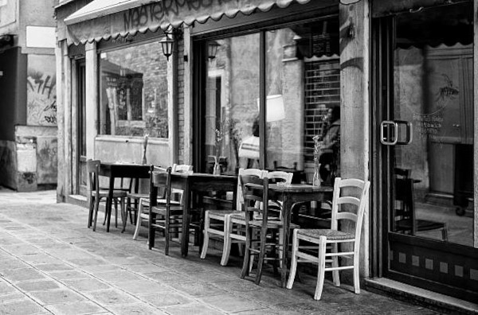

Um pouco sobre a nossa história
A família Zorzi é uma tradicional família italiana. Durante o período da ditadura militar na Itália, nosso patriarca, Alessandro Enrico Zorzi veio refugiado para São Paulo, Brasil; aqui ele encontrou Maria de Lourdes Aparecida, a esposa dele e nossa matriarca.
Ambos passavam muitas dificuldades e as vezes não tinham nem o que comer, eles já tinham dois filhos na época, por conta disso Alessandro estava muito preocupado e insatisfeito com a situação da família, Zorzi era filho e aprendiz de um cozinheiro italiano, então teve a ideia de procurar emprego em algum restaurante local. Depois de muito esforço e muita boa lábia ele conseguiu o emprego em uma pizzaria; logo começou a se destacar e sua vida começou a mudar; ele foi ficando muito conhecido, e as pizzas que ele fazia eram extremo sucesso em São Paulo. Depois de anos e anos ganhando tanto dinheiro como funcionário destaque daquela pizzaria, ele decidiu sair de lá e criou o seu próprio restaurante, o restaurante Zorzi.
Nos primeiros anos do restaurante tudo foi muito bom, o sucesso foi muito grande, o restaurante Zorzi ficou conhecido em todo o estado de São Paulo como um dos melhores restaurantes do estado, principalmente por conta das comidas que remetiam sempre à culinária italiana. Depois de alguns anos Alessandro Zorzi recebeu um diagnóstico médico de cáncer, isso fez com que tudo mudasse; ele precisou abandonar seu restaurante, quem assumiu em seu lugar foi seu filho mais velho, Antônio Zorzi; mas ele não era tão bom quanto seu pai, e acabou não conseguindo conduzir o restaurante; então ele acabou fechando de vez o restaurante depois do falescimento de seu pai, Alessando Enrico Zorzi.
Depois de muitos e muitos anos, nós, descendentes de Zorzi resolvemos reabrir o restaurante; nosso objetivo é honrar nosso falescido patriarca, e fazer com que esse restaurante seja um dos melhores e mais famosos do estado de São Paulo, assim como era antigamente.
Imagem do restaurante Zorzi 70 anos atrás
